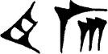
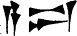
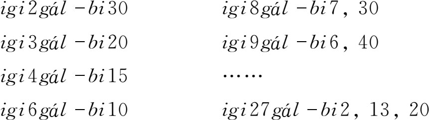
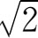
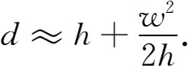
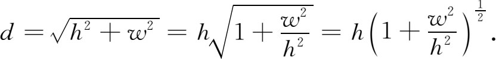

4．算术运算
在巴比伦记数制中，代表1和10的记号是基本记号。从1到59这些数都是用几个或者更多一些基本记号结合而成的。因此这种数的加减法就不过是加上或去掉这种记号。巴比伦人把数字合在一起用来表示相加，例如表示16。减法用记号表示，如

即40-3。在较晚期的天文文件中则出现tab这个字，它表示加法。他们也做整数的乘法。比方说，乘以37，他们的做法是乘以30，另外再乘以7，然后把结果相加。乘法记号是

，读作a-rá，意思是“去”。巴比伦人也做整数除以整数的运算。由于除以一个整数a就是乘以倒数1/a，这就牵涉到分数的运算。巴比伦人把倒数化成60进制的“小数”，而除了上面指出的几个分数以外，不用分数的特殊记号。他们有数字表，可以查出1/a形式的数（其中a＝2α3β5γ）怎样写成有限位的60进制“小数”。有些数表给出1/7，1/11，1/13等的近似值，因为这些分数所化成的60进制小数是无限循环的。在一些老问题里所出现的分数中，如果分母里含有2，3或5之外的因子，分子里也有这种因子，那就彼此约掉。
巴比伦人完全靠倒数表来作计算。例如，他们的表中有

这些显然表示1/2＝30/60，1/3＝20/60等。至于igi和gál-bi的确切意义则不知道。60进制分数（即小于1的数）用60乘幂60，602等的逆方幂表示，不过分母并未明确写出。这种写法仍为希腊人希帕恰斯（Hipparchus，又译“喜帕恰斯”“依巴谷”）和托勒玫（Claudius Ptolemy，又译“托勒密”）所采用，并且一直沿用到16世纪文艺复兴时的欧洲，这之后才被以10为底的10进制小数所代替。
巴比伦人也有表示平方、平方根、立方和立方根的数表。当方根是整数时，给出的是准确值。对于其他的方根，相应的60进制数值只是近似的。无理数当然是不能用有限位的10进制或60进制小数来表示的。不过，没有事实可以证明巴比伦人懂得这一点。他们很可能相信，只要用足够多的位数，就可用60进制小数准确表达无理数。巴比伦人给出的

的近似值是＝1.414213…而不是1.414214…。在他们计算高h、宽w的矩形对角线d时出现平方根。有一个问题是求给定宽和高的一扇门的对角线。给出的解答并未说明是怎么求得的，但相当于用了求对角线d的近似公式，即

这公式在h＞w时是d的很好的近似式，例如在他们的一个问题中有h＞w的情形，可以看出这解答是合理的，因为

如果把二项式展开并只取头两项，那就得出上面的近似式。他们还给出了求平方根问题的其他近似解答，这些可能是用了巴比伦人数字表中的数而得出的。